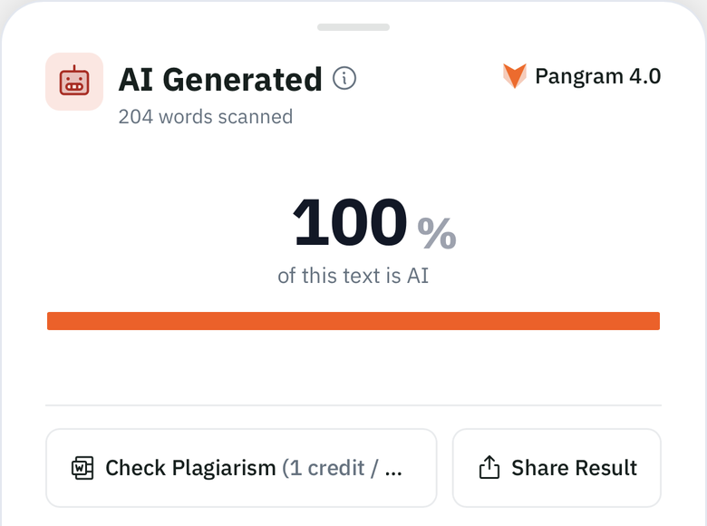

This week a colleague I admire replied to one of my emails with two words and a screenshot, and I learned that a rule had formed while I wasn't looking. The email was mine — my ideas, my structure, my claims — but an AI had proofed it, and to my colleague that made it something else. I had disclosed the AI's role in the paper the email described. It had not occurred to me that the email needed its own disclosure. Apparently it did.

The rule is being written by embarrassments, not committees
Nobody legislated that a proofed paper with an acknowledgments section is fine while a proofed email is a small betrayal. No style guide says where the line runs between assistance and inauthenticity. The norm is precipitating out of moments exactly like mine: someone uses the tools the way they use them, someone else recoils, and both walk away having learned where one boundary sits — for that pair, in that community, this year. The mores are real, they carry real moral weight for the people who hold them, and they are nowhere written down. That combination is the worst possible terrain for someone who corresponds across communities.
Inside the university, prose is evidence of a mind
The recoil makes sense once you see what writing is for inside the university. Essays are graded, papers are refereed, students are examined, and all of it rests on one assumption: the prose is evidence of the mind that produced it. A teaching institution's central artifact is text-as-proof-of-thought. A tool that generates fluent text breaks the evidentiary chain, and an institution whose degrees certify that chain is right to feel threatened. So academia has responded the way institutions respond when their instrument is compromised: journals demand AI-use statements, syllabi define permitted and forbidden assistance, and undisclosed use reads not as efficiency but as forgery.
A large part of the complication is not epistemic but financial, and inside the institution it registers as horror. Undergraduates pay hundreds of thousands of dollars for a degree, and a growing share of them use the tools to pretend to get the education that the money was for. The essay is generated, the reading is summarized, the problem set is solved by a model, and the transcript certifies that a mind was formed when nothing of the kind took place. The people who teach watch this at scale, every semester, and it has made fluent prose from anyone a little suspect. When my colleague ran my email through a detector, the reflex came from that classroom, not from anything about me.
Outside the university, the disclosure would be the strange part
In business and government, writing has never carried that evidentiary weight. The executive signs letters drafted by staff; the agency head testifies in sentences written by a team; the consultant's report is the work of many hands under one logo. Nobody is deceived, because nobody ever took the signature to mean sole authorship. In that world the model is one more member of staff, and appending "AI assisted" to a memo would land the way disclosing spell-check would — a confession to a sin no one had counted. I work in both worlds. The same sentence, produced the same way, is unremarkable in one inbox and grounds for a "really?" in the other.
Email between colleagues is the hard case, and my colleague may be right
Correspondence sits at the boundary. An email is personal in a way a paper is not: the reader assumes the hand is yours, that the minutes it took to write were yours, that the attention embedded in the sentences is a gift from you specifically. If a colleague spends their own attention on my prose, there is force to the claim that they are owed to know whose prose it is. Between academics the pull is stronger still, because the correspondents are the same people whose institution depends on text being proof of thought. I don't concede that a proofed email is deceptive — but I no longer think the objection is precious, either.
Why I won't stop using the tools
The honest countercase is what the tools have done for my work. Knowing that an editor will pass behind me changes how I write: faster, and often more plainly, because I can put the thought down without polishing it in place — the language will be shortened. The tools let me carry several projects in parallel that I could not have carried alone, and I am learning faster and finishing more than at any point I can remember. The thinking is still the constraint; the tools lowered the cost of shipping it. Asking me to give that up in the name of authenticity asks me to write less, to fewer people, with more friction — and I don't believe the people I write to want that trade either.
So: disclosure that is standing, specific, and cheap
The resolution I've landed on is to stop guessing each community's line and instead say what I did, every time, at a cost low enough that the saying actually happens. My email signature now carries a short fragment — AI edited ideated supported reviewed — where each word links to a page defining exactly what that kind of use means, and in any given message I delete the words that don't apply. A message no AI touched says no AI. It is not a solution to the deeper question of what authenticity means when the tools are this good; it is a way of being honest at wholesale prices while the mores are still moving.
Tell me when I get it wrong
I correspond from a small circle — papers, government analysts, seven-year-olds, and chatbots — which means I will misjudge norms I can't see from here. If the degree to which I've used AI in something I sent you gave offense, if a message of mine read as inauthentic, or if these disclosures themselves seem miscalibrated — too coarse, too fine, or beside the point — I am asking you, sincerely, to reply and say so — anonymously if you like. The mores are being written in exchanges like that one, and I would rather be corrected than quietly resented.